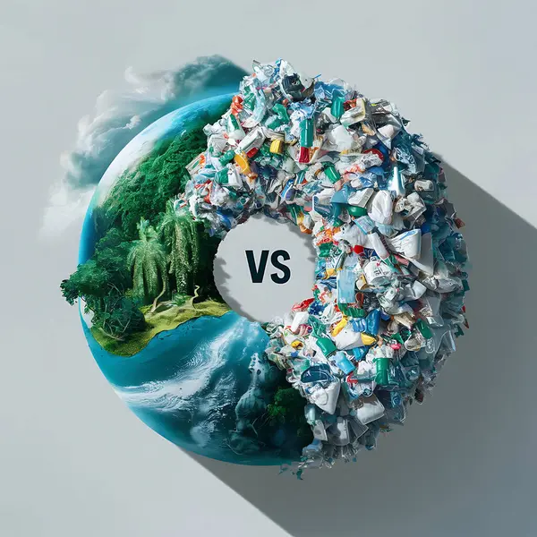

Missão: Salvar o Planeta

Introdução
O planeta precisa de heróis e a vossa patrulha foi escolhida! Para cumprir a missão, vão percorrer um grande circuito com 5 estações, cada uma com um desafio diferente.
Água, reciclagem, floresta, solidariedade e um desafio final: em cada estação vão aprender algo novo sobre o mundo em que vivemos e sobre o que podemos fazer por ele.
Trabalhem em equipa, ajudem-se uns aos outros e, no final, conquistem o vosso título!
O Passaporte Verde
Cada patrulha recebe um Passaporte Verde e leva-o consigo por todas as estações. Em cada uma, a patrulha recebe o seu carimbo.
As 5 estações
Completem cada desafio e carimbem o vosso passaporte.
Água
Desafio: transportar água usando recipientes improvisados, sem derramar.
Reciclagem
Desafio: separar rapidamente os materiais nas categorias certas.
Floresta
Desafio: montar uma pequena árvore utilizando papelão.
Solidariedade
Desafio: um membro da patrulha fica temporariamente “sem poder usar uma das mãos”. Os restantes têm de o ajudar a completar uma tarefa.
Desafio final
Situação: a vossa comunidade tem este problema:
Resultado
No final do circuito, a vossa patrulha recebe um título especial.
Patrulha Guardiã da Terra
Cada estação concluída é um passo para proteger o nosso planeta. Esta patrulha provou que sabe cuidar da água, da floresta e das pessoas.